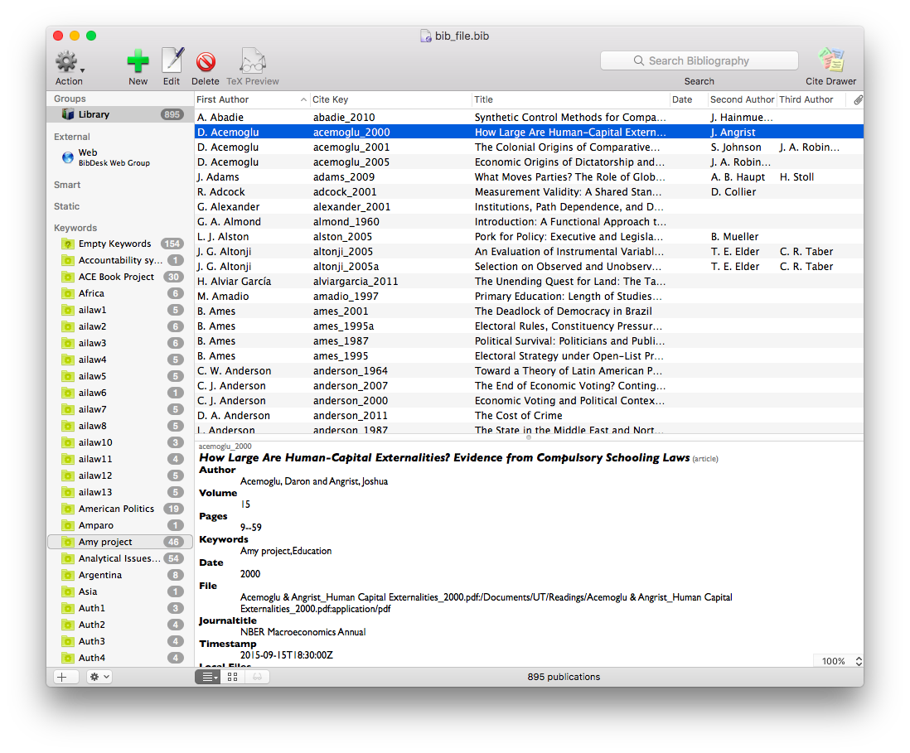
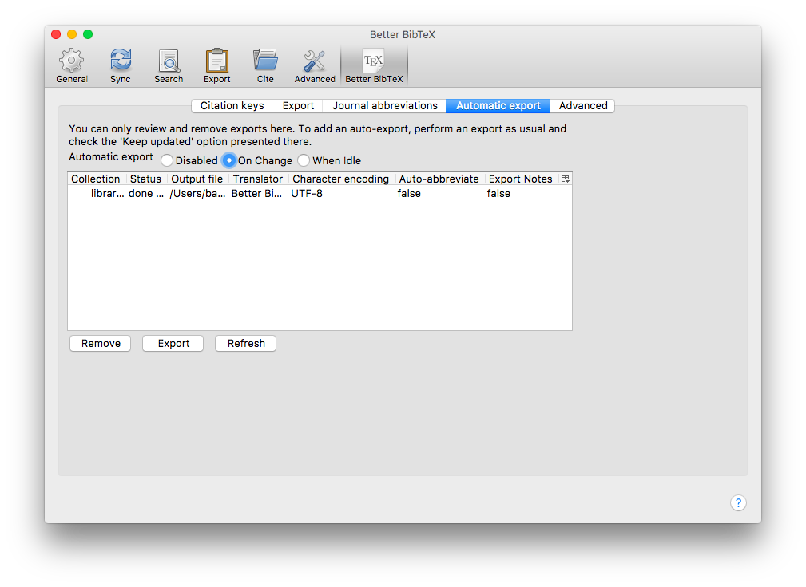

Bibliographies and LaTeX
Brendan Apfeld
November 18, 2016
Overview
Dealing with Bibliographies in
- There are three general concerns
- Generating (and maintaining) a “Bib” file
- Entering citations into your document
- Getting to turn the first two concerns into something usable
- Other tweaks
- Specific formatting requirements
The Bib File
What is a “Bib” File?
- A bib file, noted with a
.bibextension, is a plain text file that contains a list of your citations- These entries include
- Author
- Title
- Etc.
- Citekey
- These entries include
Example Bib File

How to Make a bib file
- Do it by hand
- Google Scholar makes getting the citation easy
- But it means that all you end up with is this goofy file
- Use a .bib file app manager like BibDesk
- Relatively easy to use
- Adds tools like keywords and groups
BibDesk

How to Make a bib file
- Use a full “point-and-click” manager like Zotero or Mendeley
Zotero

Zotero (or similar)
- Advantages
- Easy to use
- Complex groups/collections/tags
- Notes
- Attach files and index them for search
- Has options for Word, if you ever need to go that route
- Disadvantages
- Can slow down with larger bibliographies
- “Point-and-click” convenience is ultimately slower
- Possibly not future-proof
My Zotero Use

My Zotero Use
- Adjust my citation key default
- Automatic export to bib file
Citations - Overview
Natbib vs BibLaTeX
- There are two citation packages options: “natbib” and “biblatex”
- They use different backend programs to process the citations (bibtex and biber, respectively)
- The differences are pretty small between the two, but there are some incompatibilities
- You have to make a choice up front when generating your bib file
- The choice will affect what you put into your file, but other than that it shouldn’t matter very much
Citations Using natbib
The Preamble
\usepackage{natbib}- Well that’s easy!
Citations in the Document
\citep{<citekey>}for an parenthetical citation\citep[<pages>]{<citekey>}for parenthetical with a page citation\citet{<citekey>}for a text citation\citeyear{<citekey>}for just the year citation- There are some other options, but these are the most common
References Page
\clearpage % to add a page break
\bibliographystyle{apsr} % assuming you have apsr.bst saved in the correct location
\bibliography{<your_bib_file>}Compiling into a pdf
- To compile within TeXworks (or similar):
- Compile once as pdfLaTeX
- Compile a second time as BibTeX
- Compile a third time as pdfLaTeX
- Compile a fourth time as pdfLaTeX
Some Notes on natbib
- There are lots of style files out there
- You can save it in the working directory for your document or
~/Library/texmf/bibtex/bstfor global access (on Mac, not sure about Windows)
- You can save it in the working directory for your document or
- The bib file should also be placed in the working directory for your document
- If it’s not, you can use an absolute path to direct to it
- But it struggles with foreign characters
Citations Using biblatex
The Preamble
\usepackage[style=authoryear, url=false, doi=false]{biblatex}\addbibresource{<your_bib_file>}- Also pretty easy!
- Note the second line implies you could use multiple bib files
Citations in the Document
\autocite{<citekey>}for almost everything\textcite{<citekey>}for a text citation\autocite[<page_no>]{<citekey>}also works for page numbers- You can also use things like
\citeyear{}if you need
References Page
\clearpage % to add a page break
\printbibliographyCompiling into a pdf
- To compile within TeXworks (or similar):
- Compile once as pdfLaTeX
- Compile a second time with biber (may require extra setup)
- Compile a third time as pdfLaTeX
- Compile a fourth time as pdfLaTeX
Some Notes on biblatex (ht: JAB)
- Although it solves problems with foreign/unicode characters, it has some limitations/quirks
- No deep library of citation style files (but, honestly, who cares?)
- Default is to put “In:” before the journal name; solve with (one line)
\renewbibmacro{in:}{\ifentrytype{article}{} {\printtext{\bibstring{in}\intitlepunct}}}
Also this:
- Inconsistent period placement with quotation marks; solve with:
\usepackage[american]{babel}- And to avoid a warning, also add
\usepackage{csquotes}
Other Considerations
Isn’t there an easier way to compile!?
- If you happen to be using a .Rnw file in RStudio, then when you “knit” that, it will do all four steps for you in one fell swoop
- If you compile from the command line, you can run
latexmk <yourfile.tex>- This allows you to set extra flags like
-xelatexor-c
- This allows you to set extra flags like
Some cool tricks (ht: JAB)
- Load the hyperref package at the very end of your preamble to automatically link your text citations with your reference list
\usepackage{hyperref}- Fix its ugly box default and make links colored words instead by adding this immediately after:
\hypersetup{colorlinks=true}
One more trick (thanks again Alex)
- If you keep a DOI in your bib file for your entries, you can link the title of each entry to the DOI
\newbibmacro{string+doi}[1]{%
\iffieldundef{doi}{#1}{\href{http://dx.doi.org/\thefield{doi}}{#1}}}
\DeclareFieldFormat{title}{\usebibmacro{string+doi}{\mkbibemph{#1}}}
\DeclareFieldFormat[article]{title} % should be one line with next
{\usebibmacro{string+doi}{\mkbibquote{#1}}}There are lots of options for everything
- JFGI